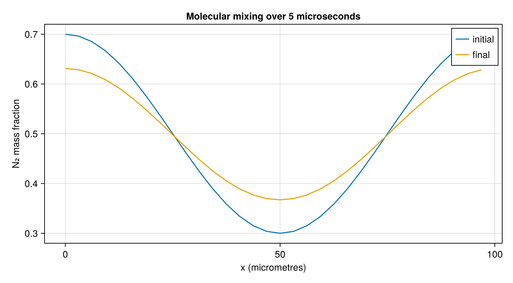

Evolve a molecular mixing layer
A thermodynamic EOS determines density and energy but does not determine how rapidly species mix. This tutorial connects independently sourced binary diffusivities to the conservative species and energy fluxes. A small periodic nitrogen–oxygen layer uses SI units throughout.
using CompactLES
MPI.Initialized() || MPI.Init(threadlevel=:funneled)
using CairoMakie
CairoMakie.activate!(type = "png")Construct consistent thermodynamics and transport
Constant heat capacities are adequate for this near-300 K calculation. CeaTransport still supplies temperature-dependent viscosity and thermal conductivity. The binary fit is labelled in the same species order as the EOS and is valid only over the requested temperature interval.
eos = IdealMixture(["N2", "O2"])
binary = neutral_binary_diffusion(species_names(eos);
temperature_min = 290.0, temperature_max = 320.0)
transport = CeaTransport(eos; diffusion = :mixture_averaged,
binary_diffusion = binary)
temperature_domain(binary)(290.0, 320.0)Unity-Lewis diffusion would set each species diffusivity to the thermal diffusivity, kappa / (rho * cp). Here the measured binary correlation supplies the mixing rate instead. The correction-velocity flux makes the species diffusion fluxes sum to zero, and species enthalpy accompanies those fluxes in the energy equation.
length_x = 1e-4 # 100 micrometres
problem = Problem(
name = "nitrogen--oxygen molecular mixing",
eos = eos,
transport = transport,
domain = ((0.0, length_x), (0.0, 1.0), (0.0, 1.0)),
bcs = (PeriodicBC(), PeriodicBC(), PeriodicBC()),
ic = (x, y, z) -> begin
yn2 = 0.5 + 0.2 * cospi(2x / length_x)
Prim(Y = (yn2, 1 - yn2), p = 101_325.0, T_ion = 300.0)
end,
)Problem "nitrogen--oxygen molecular mixing"
domain: (0.0, 0.0001) × (0.0, 1.0) × (0.0, 1.0)
metric: CartesianMetric
EOS: IdealMixture (2 species)
boundary conditions: PeriodicBC / PeriodicBC, PeriodicBC / PeriodicBC, PeriodicBC / PeriodicBC
sources: noneThe profile is smooth, so artificial transport and state filtering are disabled to make molecular mixing observable without their contribution. This choice is specific to this resolved smooth case, not a shock recipe.
solver, Q = setup(problem, Numerics(
n_global = (32, 1, 1),
art = ArtParams(enabled = false),
filter_interval = 0,
cfl = 0.4,
))
x, initial_y = line_profile(solver, Q, :Y; species = 1)
tfinal = 5e-6
run!(solver, Q; tfinal, nmax = 20_000)
@assert solver.t == tfinal
_, final_y = line_profile(solver, Q, :Y; species = 1)
fig = Figure(size = (760, 420))
ax = Axis(fig[1, 1], xlabel = "x (micrometres)", ylabel = "N₂ mass fraction",
title = "Molecular mixing over 5 microseconds")
lines!(ax, x .* 1e6, initial_y, label = "initial")
lines!(ax, x .* 1e6, final_y, label = "final")
axislegend(ax)
fig
Nitrogen and oxygen have different molecular weights and enthalpies: this is a coupled gas calculation, not an exact constant-density scalar diffusion solution. The attenuation is a physical illustration; the repository's analytic diffusion test uses deliberately equal thermodynamics to isolate the numerical diffusion operator.
If a state leaves the polynomial fit's temperature or pressure domain, the solver rejects it collectively with SolverFailure(:transport_domain). Lowering the CFL does not extend the physical fit range. See Thermodynamics and species transport for units, source selection, mixture rules, and the omitted Soret, Dufour, and pressure-diffusion effects.
This page was generated using Literate.jl.